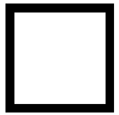
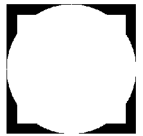
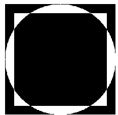
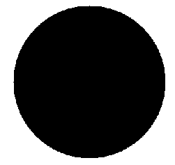

原文出处:本文由博客园博主刘文华提供。
原文连接:https://www.cnblogs.com/liuwenhua/p/11454402.html
原文连接:https://www.cnblogs.com/liuwenhua/p/11454402.html
bitwise_and是对二进制数据进行“与”操作，即对图像（灰度图像或彩色图像均可）每个像素值进行二进制“与”操作，1&1=1，1&0=0，0&1=0，0&0=0
bitwise_or是对二进制数据进行“或”操作，即对图像（灰度图像或彩色图像均可）每个像素值进行二进制“或”操作，1|1=1，1|0=1，0|1=1，0|0=0
bitwise_xor是对二进制数据进行“异或”操作，即对图像（灰度图像或彩色图像均可）每个像素值进行二进制“异或”操作，1^1=0,1^0=1,0^1=1,0^0=0
bitwise_not是对二进制数据进行“非”操作，即对图像（灰度图像或彩色图像均可）每个像素值进行二进制“非”操作，~1=0，~0=1
#导入工具包
from imutils import *rectangle = np.zeros((300,300,3),dtype='uint8')
white = (255,255,255)
cv2.rectangle(rectangle, (25,25), (275,275), white, -1)
show(rectangle)
circle = np.zeros((300,300,3), dtype='uint8')
cv2.circle(circle, (150,150), 150, white, -1)
show(circle)
# AND，与操作，有黑就变黑
image = cv2.bitwise_and(rectangle, circle)
show(image)# OR，或操作，有白就变白
image = cv2.bitwise_or(rectangle, circle)
show(image)
# XOR，异或操作，黑白变白，黑黑和白白变黑
image = cv2.bitwise_xor(rectangle, circle)
show(image)
# NOT, 非操作，颜色取反
image = cv2.bitwise_not(circle)
show(image)